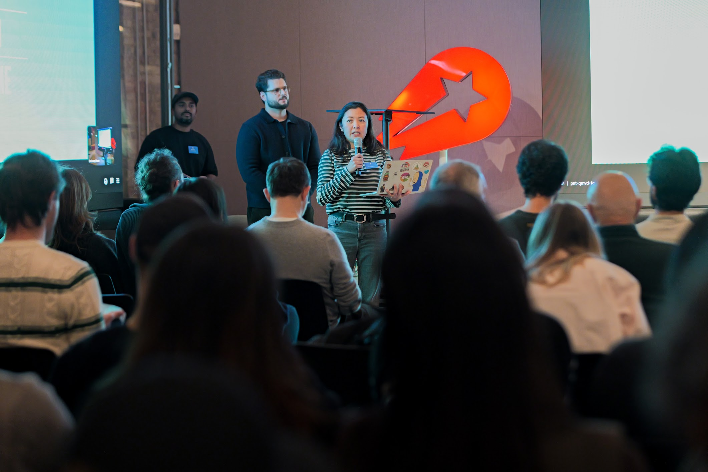
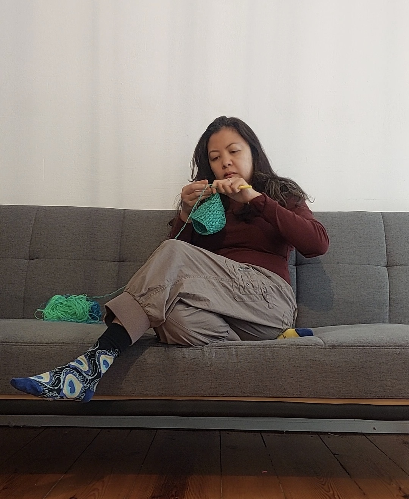

I'm originally from the Philippines and I now live in Berlin, Germany, after spending nearly a decade in Ireland and a few years in Singapore. These days you'll find me hosting and organizing community events for UXDX, learning German, solving logic puzzles, making things, and exploring what AI-assisted prototyping means for designers.
I recently learned how to crochet, so there has been a lot of that too.
Leadership
Shared insights on the UX of Visa Application with the Irish design community, from the perspective of someone with a "weak" passport.
From curating topics and sourcing venues to coaching speakers and hosting on the day , I help bring Berlin's product design community together, one event at a time.
Built and led a community for women and non-binary folks in UX , finding speakers, hosting events, and creating space for underrepresented voices in the industry.
One of the founding members of BNP Paribas Ireland's Multicultural ERG. Owned the communications function , editing and producing the newsletter and coordinating member contributions.
What it's like to work with me
In their own words
She became known in the company for her incredible eye for detail, an ability to get through a huge amount of work under pressure and to a deadline, and an almost uncanny ability to break apart seemingly impenetrable design problems into simpler and more manageable chunks.
Tiffany consistently took the time to thoroughly review and understand the research I conducted, ensuring that her designs were not just visually compelling but also deeply user-centered.
Tiffany constantly delivers and never ceases to amaze in how she can parse everything and produce results, no matter the media. Tiffany is a fantastic communicator and I personally felt empowered working alongside her.
Tiffany showed herself to be up to every challenge, approaching each one in a clear, methodical manner where solutions were always reached and problems overcome. She has great knowledge of design systems, is an effective team player, and is always striving to grow and improve.